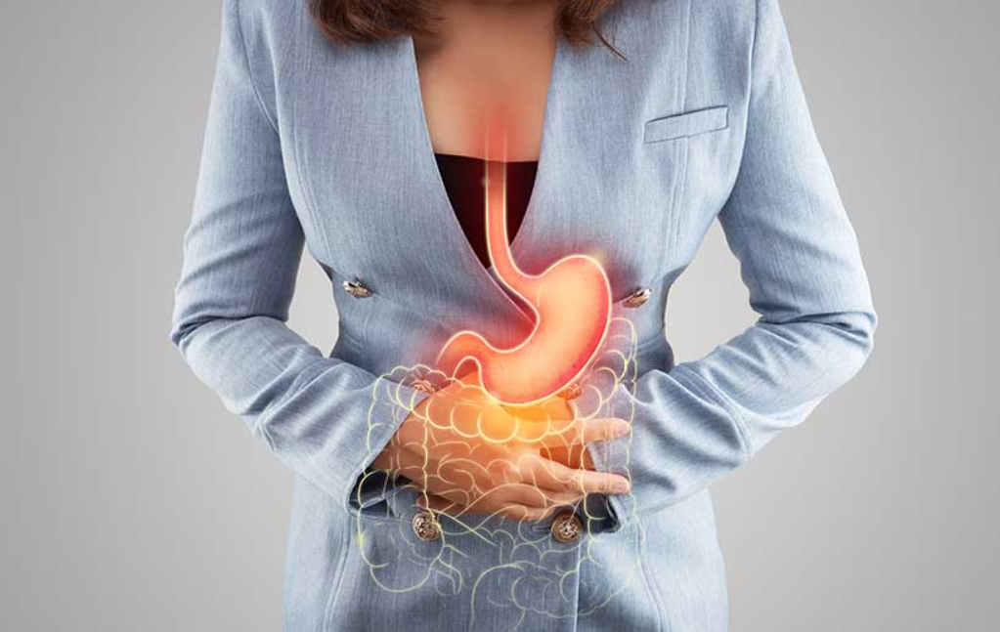
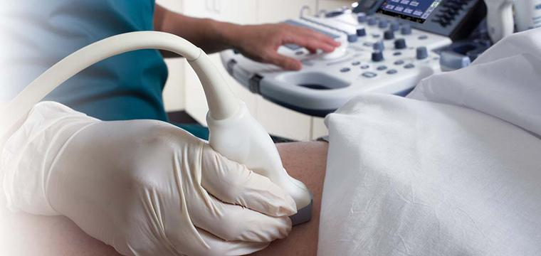

Клинические проявления
Местные расстройства характеризуются симптомами диспепсии (тяжесть и чувство давления, полноты в подложечной области, появляющиеся или усиливающиеся во время еды или вскоре после еды, отрыжка, срыгивание, тошнота, неприятный привкус во рту, жжение в эпигастрии, нередко изжога, которая говорит о нарушении эвакуации из желудка и забросе желудочного содержимого в пищевод). Эти проявления чаще возникают при определённых формах хронического антрального гастрита, которые ведут к нарушению эвакуации из желудка, повышению внутрижелудочного давления, усилению гастроэзофагеального рефлюкса и обострению всех перечисленных симптомов. При хроническом гастрите тела желудка проявления встречаются нечасто и сводятся преимущественно к тяжести в эпигастральной области, возникающей во время или вскоре после еды.
У больных с Helicobacter pylori-ассоциированным хроническим гастритом, длительное время протекающим с повышением секреторной функцией желудка, могут появиться признаки «кишечной» диспепсии в виде расстройств дефекации. Часто они носят эпизодический характер и нередко становятся основой для формирования синдрома раздражённого кишечника (желудочно-тонкокишечный, желудочно-толстокишечный рефлюкс).
Общие расстройства могут проявляться следующими синдромами:
1)слабостью, раздражительностью, нарушениями со стороны сердечно-сосудистой системы — кардиалгии, аритмии, артериальной неустойчивостью;
2)у пациентов с атрофическим хроническим гастритом может развиться симптомокомплекс, схожий с демпинг-синдромом (внезапная слабость, бледность, потливость, сонливость, возникающие вскоре после еды), иногда сочетающихся с расстройствами кишечника, с императивным позывом к стулу;
3)у пациентов с хроническим гастритом тела желудка и развитием В12-дефицитной анемии появляются слабость, повышенная утомляемость, сонливость, наблюдается снижение жизненного тонуса и утрата интереса к жизни; возникают боли и жжение во рту, языке, симметричные парестезии в нижних и верхних конечностях;
4)у пациентов с Helicobacter pylori-ассоциированным антральным хроническим гастритом с повышенной кислотностью возможно развитие язвенноподобных симптомов, свидетельствующих о возможном предъязвенном состоянии.
Клиника
Острым гастритом называют острое воспаление слизистой оболочки желудка, вызванное разовым воздействием сильных раздражителей. Острый гастрит часто развивается вследствие попадания в желудок химических раздражающих веществ, приёма некоторых лекарств, употребления некачественной и заражённой болезнетворными микроорганизмами пищи. Кроме того, острый гастрит может возникать и на фоне других общих заболеваний, часто — при острых инфекциях или нарушениях обмена веществ.
В зависимости от клинических проявлений и характера повреждения слизистой оболочки желудка рассматривают следующие типы острого гастрита: катаральный, фибринозный, коррозийный и флегмонозный:
Катаральный гастрит (лат. gastritis catarrhalis, син. простой гастрит, банальный гастрит) является чаще всего следствием пищевых отравлений и неправильного питания. Он характеризуется инфильтрацией лейкоцитов в слизистую оболочку желудка, воспалительной гиперемией, дистрофическими изменениями эпителия.
Фибринозный гастрит (лат. gastritis fibrinosa, син. дифтеритический гастрит) возникает при отравлении кислотами, сулемой или при тяжёлых инфекционных заболеваниях. Острый фибринозный гастрит проявляется дифтеритическим воспалением слизистой оболочки желудка.
Коррозийный гастрит (лат. gastritis corrosiva, син. некротический гастрит, токсико-химический гастрит) возникает из-за попадания в желудок концентрированных кислот или щелочей, солей тяжёлых металлов. Коррозийный гастрит характеризуется некротическими изменениями тканей желудка.
Причины флегмонозного гастрита (лат. gastritis phlegmonosa) — травмы и осложнения после язвенной болезни или рака желудка, некоторых инфекционных болезней. Характеризуется гнойным расплавлением стенки желудка и распространением гноя по слизистому слою.
Эндоскопическое лечение
Эндоскопическая резекция единым блоком пациентам с хроническим гастритом при обнаружении эндоскопически видимых патологических участков дисплазии низкой или высокой степени.

Медикаментозное лечение
Проведение эрадикационной терапии при положительном результате тестирования на инфекцию H. pylori пациентам с хроническим гастритом в качестве этиологического лечения.
Проведение эрадикационной терапии при положительном результате тестирования на инфекцию H. pylori пациентам с атрофическим гастритом для предотвращения прогрессирования атрофии.
Проведение антисекреторной терапии ингибиторами протонного насоса или ребамипидом пациентам с эрозивным гастритом, в том числе на фоне приёма нестероидных противовоспалительных препаратов, с целью достижения заживления эрозий.
Проведение терапии висмута трикалия дицитратом или ребамипидом пациентам с хроническим гастритом, в том числе атрофическим, с целью потенцирования защитных свойств слизистой оболочки.
Проведение терапии ингибиторами протонного насоса пациентам с хроническим гастритом и симптомами диспепсии, в том числе в сочетании с функциональной диспепсией, в качестве симптоматического лечения.
Проведение терапии препаратами, обладающими прокинетическим эффектом пациентам с хроническим гастритом и симптомами диспепсии, в том числе в сочетании с функциональной диспепсией, в качестве симптоматического лечения.
Лечение ребамипидом пациентам с хроническим гастритом и симптомами диспепсии для купирования этих симптомов.
При обострении гастрита необходима щадящая диета. Больным гастритом противопоказаны шоколад, кофе, газированные напитки, алкоголь, консервы, концентраты и суррогаты любых продуктов, пряности, специи, а также продукция предприятий быстрого питания, блюда, провоцирующие брожение (виноград, чёрный хлеб и т. п.), копчёная, жирная и жареная пища, изделия из сдобного теста. При этом питание должно быть разнообразным и богатым белками и витаминами. По окончании острого состояния питание должно становиться полноценным с соблюдением стимулирующего принципа в период ремиссии у больных с пониженной кислотностью. Рекомендуется дробный приём пищи, по 5—6 раз в сутки.

наверх